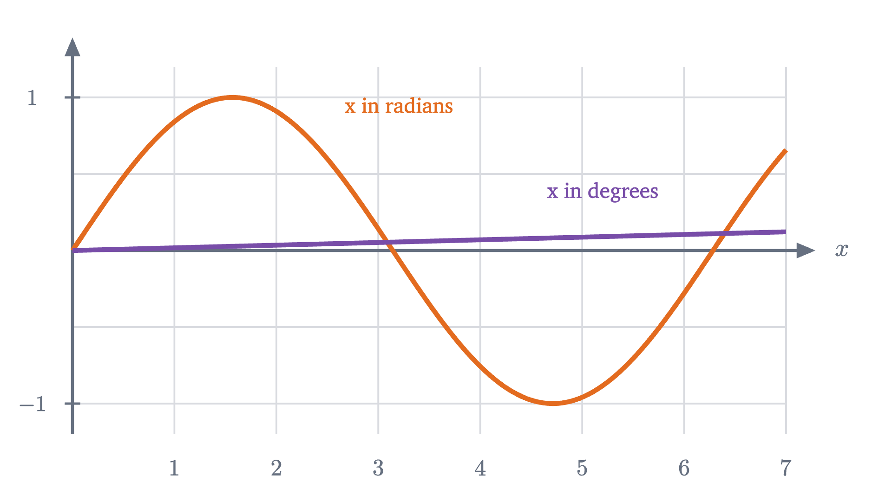

Why the derivative of sine is cosine
Nudge a point around the unit circle and a tiny triangle appears, similar to the big one. Its legs are the derivatives of sine and cosine.
AssumesWhat is a derivative? Speed at a single instantThe product rule and the chain rule, seen
A point moves around a circle of radius 1 at a steady pace, starting from the rightmost position. Its height above the center goes up, levels off at the top, comes down, and repeats. When is that height changing fastest, and how fast?
The height of the point after it has turned through an angle $\theta$ is $\sin\theta$, so the question is asking for the derivative of the sine function. None of the rules we have can produce it. Sine is not a power of $\theta$, nor a sum, product or chain of powers, so the power rule and the product and chain rules have nothing to hold on to. We have to go back to the definition, and the definition immediately asks for something awkward: the limit of $\frac{\sin(\theta + h) - \sin\theta}{h}$, where the $h$ is locked inside a sine and cannot be cancelled by algebra.
The way through is to stop treating $\sin$ as a formula and return to what it measures. On the circle, the answer can be seen in one small triangle. After that we will prove it.
What sine and cosine are, and how the angle is measured
Draw the circle of radius 1 centered at the origin, the unit circle. Start at the point $(1, 0)$ and travel counterclockwise along the circle. After turning through an angle $\theta$ you are at a point whose coordinates are, by definition, $(\cos\theta, \sin\theta)$: cosine is the horizontal position and sine is the height. (The lesson on the unit circle builds this definition from right triangles.)
The angle will be measured in radians, which means that $\theta$ is the length of the arc you have traveled along the unit circle. A full turn is the whole circumference, $2\pi$; a quarter turn is $\frac{\pi}{2} \approx 1.571$; and $60°$ is $\frac{\pi}{3} \approx 1.047$. In the animation above, the green arc on the circle and the green segment under the graph have the same length, and that is the definition at work. The choice of unit will decide the answer, and near the end we will see what happens with degrees. (The lesson on radians introduces the unit from scratch.)
Finally, recall the definition we are working from. The derivative of a function $f$ at a point $a$ is the limit of the difference quotient,
the change in the output divided by the change in the input, as the change in the input shrinks to zero (lesson 1).
Pause and try
Before any computation, use the animation to predict. At which positions on the circle is the height of the point changing fastest as $\theta$ increases? At which positions is it momentarily not changing at all? Where is the height decreasing?
Show answerHide answer
The height changes fastest where the point is moving straight up or straight down, which is at the far right ($\theta = 0$) and the far left ($\theta = \pi$). It is momentarily not changing at the top ($\theta = \frac{\pi}{2}$) and the bottom ($\theta = \frac{3\pi}{2}$), where the motion is horizontal. It decreases on the whole left half of the trip, from $\frac{\pi}{2}$ to $\frac{3\pi}{2}$. So the derivative of sine should be largest at 0, zero at $\frac{\pi}{2}$, and negative after that.
The numbers first
A calculator in radian mode can compute difference quotients even though algebra cannot simplify them. Here they are at four angles in the first quarter turn, for three values of $h$.
| $\theta$ | $h = 0.1$ | $h = 0.01$ | $h = 0.001$ |
|---|---|---|---|
| $0$ | $0.9983$ | $1.0000$ | $1.0000$ |
| $\pi/6$ | $0.8396$ | $0.8635$ | $0.8658$ |
| $\pi/3$ | $0.4559$ | $0.4957$ | $0.4996$ |
| $\pi/2$ | $-0.0500$ | $-0.0050$ | $-0.0005$ |
Each entry is $\frac{\sin(\theta + h) - \sin\theta}{h}$, rounded to four places. For instance, at $\theta = \frac{\pi}{3}$ with $h = 0.01$, $\sin\left(\frac{\pi}{3} + 0.01\right) \approx 0.870982$ and $\sin\frac{\pi}{3} \approx 0.866025$, and their difference divided by $0.01$ is $0.4957$.
Along each row the values settle. The limits look like $1$, about $0.866$, $0.5$ and $0$. This matches the prediction: largest at the right-hand side of the circle, zero at the top. And the four numbers are familiar. They are $\cos 0$, $\cos\frac{\pi}{6} = \frac{\sqrt 3}{2} \approx 0.8660$, $\cos\frac{\pi}{3} = \frac{1}{2}$ and $\cos\frac{\pi}{2} = 0$.
So the data suggest that the derivative of $\sin\theta$ is $\cos\theta$. A table cannot say why the rate of change of the height should equal the horizontal coordinate, of all things. The circle can.
A nudge along the circle
Put the point at angle $\theta$, and increase the angle by a small amount, which I will call $d\theta$ in the pictures. Two facts about the resulting motion do all the work.
The first is that the point moves a distance $d\theta$. That is what radians mean: on the unit circle, the arc traveled is the change in angle.
The second is the direction of the motion. A point on a circle moves at right angles to the radius that reaches it. The radius to our point makes an angle $\theta$ with the horizontal. Rotate both of those lines by a quarter turn: the radius becomes the direction of motion, and the horizontal becomes the vertical. So the direction of motion makes the same angle $\theta$ with the vertical.
Now split the small displacement into a vertical part and a horizontal part. The vertical part is the change in height, which is the change in $\sin\theta$ that we are after.
Look at the small triangle in the last frames. Its hypotenuse is the path of the point, of length $d\theta$. The angle at its lower corner, between the vertical leg and the hypotenuse, is $\theta$. A right triangle with hypotenuse $d\theta$ and an angle $\theta$ has a leg of length $\cos\theta \cdot d\theta$ next to that angle and a leg of length $\sin\theta \cdot d\theta$ opposite it. It is the large triangle of the first frame, with sides $\cos\theta$, $\sin\theta$ and 1, shrunk by the factor $d\theta$ and turned a quarter turn, so that the side that was horizontal in the large triangle is vertical in the small one.
Pause and try
The vertical leg of the small triangle is $\cos\theta \cdot d\theta$ and the horizontal leg is $\sin\theta \cdot d\theta$. Check that it is this way round, and not the reverse, by testing the two extreme positions $\theta = 0$ and $\theta = \frac{\pi}{2}$. Then read off from the triangle how $\cos\theta$ changes when $\theta$ increases by $d\theta$, including the sign.
Show answerHide answer
At $\theta = 0$ the point is at the far right and moving straight up, so the whole displacement should be vertical: $\cos 0 \cdot d\theta = d\theta$ and $\sin 0 \cdot d\theta = 0$, as required. At $\theta = \frac{\pi}{2}$ the point is at the top and moving horizontally, and indeed the vertical leg is $\cos\frac{\pi}{2} \cdot d\theta = 0$. For the cosine: $\cos\theta$ is the horizontal position, and the horizontal leg has length $\sin\theta \cdot d\theta$, but the point is moving to the left, so the horizontal position decreases. The change in $\cos\theta$ is $-\sin\theta \cdot d\theta$.
The vertical leg is the change in height, so the change in $\sin\theta$ is approximately $\cos\theta \cdot d\theta$, and dividing by $d\theta$ gives the rate.
The first quarter turn is not special. The next animation follows the point all the way around, with its velocity drawn as an arrow and split into the same two parts.
What the picture leaves out
The triangle argument is convincing, and it is the right way to remember the result, but it is not yet a proof. It treated a short arc of the circle as if it were a straight segment. For any actual $d\theta$ that is false: the arc bends, the chord joining its ends is a little shorter than the arc, and the chord’s direction is not exactly perpendicular to the radius at the starting point. The claim hidden in the picture is that all of these discrepancies become negligible relative to $d\theta$ as $d\theta \to 0$, and a claim of that kind is a statement about a limit. It has to be proved.
To see exactly which limits are involved, expand the difference quotient with the angle addition formula $\sin(\alpha + \beta) = \sin\alpha\cos\beta + \cos\alpha\sin\beta$. This formula is a theorem of trigonometry, proved in that lesson for all real angles, and we use it here without repeating the proof; it expresses what happens to the coordinates of a point on the circle when it is rotated through a further angle. With $\alpha = \theta$ and $\beta = h$,
The angle $\theta$ is fixed, so everything depends on two limits that have nothing to do with $\theta$:
If the first is 1 and the second is 0, the difference quotient has limit $\cos\theta$, as the picture says. These two limits are themselves the picture at $\theta = 0$. The first says that for a point just above $(1, 0)$, the height $\sin h$ and the arc $h$ are nearly equal: the arc is nearly a vertical segment. The second says that its horizontal position has barely changed.
Pause and try
With a calculator in radian mode, compute $\frac{\sin h}{h}$ and $\frac{\cos h - 1}{h}$ for $h = 0.5$, $0.1$ and $0.01$. Do the values support the two limits? Roughly how does the second quotient depend on $h$?
Show answerHide answer
$\frac{\sin h}{h}$ is $0.9589$, $0.9983$, $0.99998$, approaching 1. $\frac{\cos h - 1}{h}$ is $-0.2448$, $-0.0500$, $-0.0050$, approaching 0. The second quotient is close to $-\frac{h}{2}$, which is a sign that $1 - \cos h$ is about $\frac{h^2}{2}$: small in the second order, like the corner of the growing square in the power rule lesson.
The limit of sin h over h
Both limits follow from one comparison of three lengths. For an angle $h$ between 0 and $\frac{\pi}{2}$, draw the arc of the unit circle from $A = (1, 0)$ to $P = (\cos h, \sin h)$, and extend the radius through $P$ until it meets the vertical line through $A$ at a point $T$. Since $T$ lies on the line through the origin with slope $\frac{\sin h}{\cos h}$, its height is $\tan h = \frac{\sin h}{\cos h}$.
The proof rests on two facts from geometry: that the unit disk has area $\pi$, and that a sector’s area is proportional to its angle measured in radians (both are in the lesson on radians, which states the sector formula $\frac{1}{2}r^2\theta$). Those are where the definition of radians enters the argument. Neither fact involves a derivative, so the argument is not circular: nothing below uses the derivative of sine to find the limit that the derivative of sine depends on.
The theorem
We have now seen a proof, with three ingredients taken from trigonometry and geometry and named as such: the angle addition formula, the double-angle identity, and the area of a sector. Every clause of the theorem was needed, including the one that is easiest to skim past, “measured in radians”.
The same fact on the graphs
On the graph of $\sin\theta$, the derivative is the slope of the tangent line. The next figure draws the two graphs with the same scale on both axes, so that a slope of 1 is a line at $45°$.
At $\theta = 0$ the sine curve leaves the origin at $45°$, slope 1. At its crest the tangent is level, slope 0, and the cosine curve crosses the axis. Where sine is falling most steeply, at $\theta = \pi$, the cosine is at its lowest, $-1$.
Why radians matter
Suppose the angle is measured in degrees instead. Write $S(x)$ for the sine of $x$ degrees. Since $x$ degrees is $\frac{\pi x}{180}$ radians, $S(x) = \sin\left(\frac{\pi x}{180}\right)$, and the chain rule gives
The derivative of sine-in-degrees is not cosine-in-degrees. It carries a factor of $\frac{\pi}{180}$, because a nudge of one degree moves the point only $\frac{\pi}{180}$ of a unit along the circle. You can check this numerically: the sine of $60.1°$ minus the sine of $60°$ is about $0.000871$, which is $0.00871$ per degree, close to $0.01745 \times 0.5 = 0.00873$.

What to keep
The difficulty this time was that the difference quotient of sine could not be simplified by algebra, so the method of the earlier lessons had nowhere to start. What replaced it was geometry: a nudge of the angle moves the point a known distance in a known direction, and the two parts of that motion are the two derivatives. Making the picture into a proof took one honest inequality, $\sin h < h < \tan h$, which says that a short arc is trapped between two straight segments that are nearly the same length.
One consequence is worth carrying forward. Differentiating sine twice gives $\sin'' = (\cos)' = -\sin$: the sine function is the negative of its own second derivative, and the same is true of cosine. That property is why these functions appear whenever something oscillates.
Check yourself
What is the derivative of $\cos(2x)$ at $x = \frac{\pi}{4}$?
Problems
Work these on paper before opening the solutions. A calculator is needed only where a problem says so. The first three are direct, the next two combine this lesson with earlier rules, and the last two extend it.
Problem 1
Differentiate $f(x) = 3\sin x - 2\cos x$, and evaluate $f'(\pi)$.
Show solutionHide solution
Term by term, $f'(x) = 3\cos x - 2(-\sin x) = 3\cos x + 2\sin x$. At $x = \pi$, $\cos\pi = -1$ and $\sin\pi = 0$, so $f'(\pi) = -3$.
Problem 2
Find the tangent line to $y = \cos x$ at $x = \frac{\pi}{2}$, and use it to estimate $\cos(1.6)$. Compare with a calculator.
Show solutionHide solution
The point is $\left(\frac{\pi}{2}, 0\right)$ and the slope is $-\sin\frac{\pi}{2} = -1$, so the tangent line is $y = -\left(x - \frac{\pi}{2}\right) = \frac{\pi}{2} - x$. At $x = 1.6$ it gives $1.5708 - 1.6 = -0.0292$. A calculator gives $\cos(1.6) \approx -0.02920$, the same to four places. The agreement is unusually good because the cosine curve has no bend at this point: it is passing from curving one way to curving the other.
Problem 3
Differentiate (a) $\sin(x^2)$; (b) $\cos(3x + 1)$; (c) $\sin^3 x$.
Show solutionHide solution
(a) Outer function $\sin u$, inner $u = x^2$: the derivative is $\cos(x^2) \cdot 2x = 2x\cos(x^2)$. (b) Outer $\cos u$, inner $u = 3x + 1$: $-\sin(3x+1) \cdot 3 = -3\sin(3x + 1)$. (c) Outer $u^3$, inner $u = \sin x$: $3\sin^2 x \cdot \cos x$.
Problem 4
Find every $x$ in the interval $[0, 2\pi]$ at which the graph of $f(x) = \sin x + \cos x$ has a horizontal tangent line, and the value of $f$ at each.
Show solutionHide solution
$f'(x) = \cos x - \sin x$, which is zero when $\sin x = \cos x$. On the unit circle that happens where the two coordinates are equal, on the line $y = x$: at $x = \frac{\pi}{4}$, where both are $\frac{\sqrt2}{2}$, and at $x = \frac{5\pi}{4}$, where both are $-\frac{\sqrt2}{2}$. The values are $f\left(\frac{\pi}{4}\right) = \sqrt2 \approx 1.414$ and $f\left(\frac{5\pi}{4}\right) = -\sqrt2$. These are the highest and lowest points of the graph.
Problem 5
Show that the derivative of $\tan x = \dfrac{\sin x}{\cos x}$ is $\dfrac{1}{\cos^2 x}$ wherever $\cos x \neq 0$. Write $\tan x$ as the product $\sin x \cdot (\cos x)^{-1}$ and use the product and chain rules.
Show solutionHide solution
The factor $(\cos x)^{-1}$ is a chain with outer function $u^{-1}$, whose derivative is $-u^{-2}$, and inner function $\cos x$, whose derivative is $-\sin x$. So its derivative is $-(\cos x)^{-2} \cdot (-\sin x) = \frac{\sin x}{\cos^2 x}$. By the product rule,
The derivative is positive wherever it exists, so the tangent function increases on each interval between its vertical asymptotes.
Problem 6
Prove that $\displaystyle\lim_{h \to 0} \frac{1 - \cos h}{h^2} = \frac{1}{2}$, using the identity $1 - \cos h = 2\sin^2\frac{h}{2}$ and the limit of $\frac{\sin h}{h}$. Then use the result to estimate $\cos(0.1)$ without a calculator.
Show solutionHide solution
For $h \neq 0$,
As $h \to 0$, $\frac{h}{2} \to 0$ as well and is not zero, so the quotient in brackets has limit 1, and by the limit law for products the whole expression has limit $\frac{1}{2} \cdot 1^2 = \frac{1}{2}$. This says $1 - \cos h \approx \frac{h^2}{2}$ for small $h$, so $\cos(0.1) \approx 1 - 0.005 = 0.995$. The true value is $0.995004$.
Problem 7
A point moves around the unit circle so that its angle at time $t$ is $\theta = \omega t$, where $\omega$ is a constant. Its position is $(x, y) = (\cos\omega t, \sin\omega t)$. (a) Find the velocity $(x'(t), y'(t))$. (b) Show that the speed, $\sqrt{x'^2 + y'^2}$, equals $|\omega|$. (c) Show that the velocity is perpendicular to the position by checking that $x\,x' + y\,y' = 0$. How do (b) and (c) relate to the picture of the nudged point?
Show solutionHide solution
(a) By the chain rule with inner function $\omega t$, $x'(t) = -\omega\sin\omega t$ and $y'(t) = \omega\cos\omega t$. (b) $x'^2 + y'^2 = \omega^2\sin^2\omega t + \omega^2\cos^2\omega t = \omega^2$, so the speed is $|\omega|$. (c) $x\,x' + y\,y' = \cos\omega t \cdot (-\omega\sin\omega t) + \sin\omega t \cdot \omega\cos\omega t = 0$. Two vectors whose products of matching coordinates sum to zero are perpendicular. With $\omega = 1$ these are the two facts the picture started from: the point moves one unit of arc per unit of angle, and it moves at right angles to its radius. In the lesson those facts were read off the circle and used to find the derivatives. Here the derivatives, once proved, give the facts back.